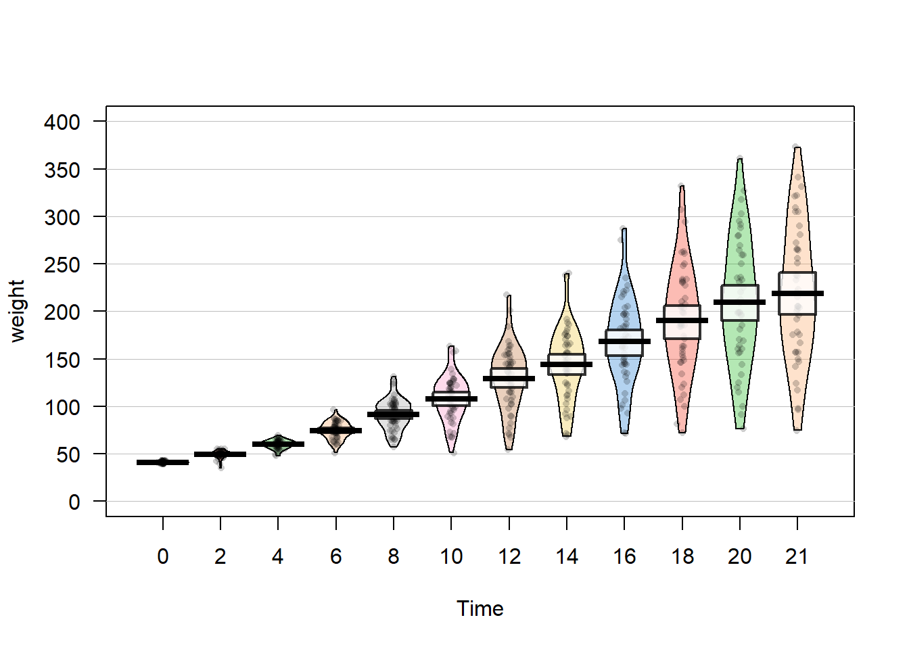
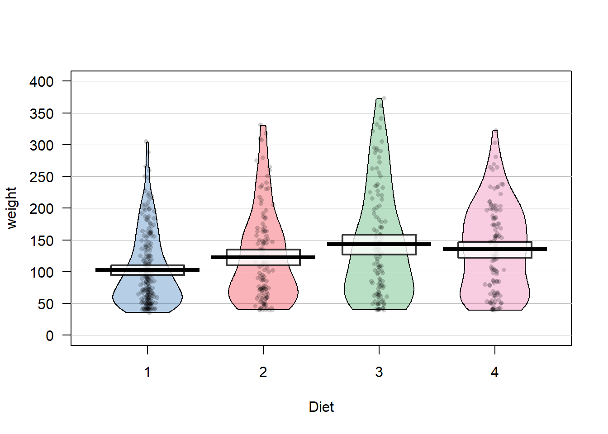

Chapter 4 Navigating the Software
Introduction
Both R and RStudio are big chunks of software, first and foremost. You will inevitably spend time doing what one does with any big piece of software: configuring it, customizing it, updating it, and fitting it into your computing environment. This chapter will help you perform those tasks. There is nothing here about numerics, statistics, or graphics. This is all about dealing with R and RStudio as software.
Download and load libraries
if (!require("pacman")) install.packages("pacman")
pacman::p_load(tidyverse, # All purpose wrangling for dataframes
readr, # importing and writing data
readxl,# read and write excel documents
purrr, # for piping %>%
corrplot, # for correlation
knitr,
yarrr)
Figure 4.1: Your workspace – all the objects, functions, and delicious glue you’ve defined in your current session.
Remember way back in Chapter 2 when I said everything in R is an object? Well, that’s still true. In this chapter, we’ll cover the basics of R object management. We’ll cover how to load new objects like external datasets into R, how to manage the objects that you already have, and how to export objects from R into external files that you can share with other people or store for your own future use.
4.1 Getting and Setting the Working Directory
Your computer is a maze of folders, files. Outside of R, when you want to open a specific file, you probably open up an explorer window that allows you to visually search through the folders on your computer. Or, maybe you select recent files, or type the name of the file in a search box to let your computer do the searching for you. While this system usually works for non-programming tasks, it is a no-go for R. Why? Well, the main problem is that all of these methods require you to visually scan your folders and move your mouse to select folders and files that match what you are looking for. When you are programming in R, you need to specify all steps in your analyses in a way that can be easily replicated by others and your future self. This means you can’t just say: “Find this one file I emailed to myself a week ago” or “Look for a file that looks something like experimentAversion3.txt.” Instead, need to be able to write R code that tells R exactly where to find critical files – either on your computer or on the web.
To make this job easier, R uses working directories.
You want to change your working directory, or you just want to know what it is.
- RStudio
Navigate to a directory in the Files pane. Then from the Files pane, select More → Set As Working Directory, as shown in Figure 4.2.
Figure 4.2: RStudio: Set As Working Directory
- Console
Use
getwdto report the working directory, and usesetwdto change it:
## [1] "C:/Users/liew_/Box/myBox/Documents/teaching/SE747_PgResMeth/se747_stats_book"Saving the working directory path into an object called currwd
# setting it manually with copy + paste
setwd("C:/Users/bl19622/Box/myBox/Documents/teaching/SE747_PgResMeth/sample_book")
# setting it using the object we created
setwd (currwd)Your working directory is important because it is the default location for all file input and output—including reading and writing data files, opening and saving script files, and saving your workspace image. When you open a file and do not specify an absolute path, R will assume that the file is in your working directory.
If you’re using RStudio projects, your default working directory will be the home directory of the project.
4.2 Creating a new Rstudio project
You want to create a new RStudio project to keep all your files related to a specific project. Click File → New Project as in Figure 4.3. ** I ALWAYS use this approach, please use it too**

Figure 4.3: Selecting New Project
This will open the New Project dialog box and allow you to choose which type of project you would like to create, as shown in Figure 4.4.

Figure 4.4: New Project dialog
Projects are a powerful concept that’s specific to RStudio. They help you by doing the following:
- Setting your working directory to the project directory.
- Preserving window state in RStudio so when you return to a project your windows are all as you left them. This includes opening any files you had open when you last saved your project.
- Preserving RStudio project settings.
To hold your project settings, RStudio creates a project file with an .Rproj extension in the project directory. If you open the project file in RStudio, it works like a shortcut for opening the project. In addition, RStudio creates a hidden directory named .Rproj.user to house temporary files related to your project.
Any time you’re working on something nontrivial in R we recommend creating an RStudio project. Projects help you stay organized and make your project workflow easier.
4.3 Viewing Your Command History
You want to see your recent sequence of commands.
Depending on what you are trying to accomplish, you can use a few different methods to access your prior command history. If you are in the RStudio console pane, you can press the up arrow to interactively scroll through past commands.
If you want to see a listing of past commands, you can either execute the history
function or access the History pane in RStudio to view your most recent input:
In RStudio typing history() into the console simply activates the History pane in RStudio (Figure 4.5). You could also make that pane visible by clicking on it with your cursor.
Figure 4.5: RStudio History pane
The history function displays your most recent commands. In RStudio the history command will activate the History pane. If you were running R outside of RStudio, history shows the most recent 25 lines, but you can request more like so:
From within RStudio, the History tab shows an exhaustive list of past commands in chronological order, with the most recent at the bottom of the list. You can highlight past commands with your cursor, then click on “To Console” or “To Source” to copy past commands into the console or source editor, respectively. This can be terribly handy when you’ve done interactive data analysis and then decide you want to save some past steps to a source file for later use.
From the console you can see your history by simply pressing the up arrow to scroll backward through your input, which causes your previous typing to reappear, one line at a time.
If you’ve exited from R or RStudio, you can still see your command history. R saves the history in a file called .Rhistory in the working directory. Open the file with a text editor and then scroll to the bottom; you will see your most recent typing.
4.4 Installing Packages
When you download and install R for the first time, you are installing the Base R software. Base R will contain most of the functions you’ll use on a daily basis like mean() and hist(). However, only functions written by the original authors of the R language will appear here. If you want to access data and code written by other people, you’ll need to install it as a package. An R package is simply a bunch of data, from functions, to help menus, to vignettes (examples), stored in one neat package.

Figure 4.6: An R package is like a lightbulb. First you need to order it with install.packages(). Then, every time you want to use it, you need to turn it on with library()
A package is like a light bulb. In order to use it, you first need to order it to your house (i.e.; your computer) by installing it. Once you’ve installed a package, you never need to install it again. However, every time you want to actually use the package, you need to turn it on by loading it. Here’s how to do it.
4.4.1 Installing a new package
Installing a package simply means downloading the package code onto your personal computer. There are two main ways to install new packages. The first, and most common, method is to download them from the Comprehensive R Archive Network (CRAN). CRAN is the central repository for R packages. To install a new R package from CRAN, you can simply run the code install.packages("name"), where “name” is the name of the package. For example, to download the yarrr package, which contains several data sets and functions we will use in this book, you should run the following:

Figure 4.7: CRAN (Comprehensive R Archive Network) is the main source of R packages
# Install the yarrr package from CRAN
# You only need to install a package once!
install.packages("yarrr")When you run install.packages("name") R will download the package from CRAN. If everything works, you should see some information about where the package is being downloaded from, in addition to a progress bar.
Figure 4.8: When you install a new package, you’ll see some random text like this you the download progress. You don’t need to memorize this.
Like ordering a light bulb, once you’ve installed a package on your computer you never need to install it again (unless you want to try to install a new version of the package). However, every time you want to use it, you need to turn it on by loading it.
4.4.2 Loading a package
Once you’ve installed a package, it’s on your computer. However, just because it’s on your computer doesn’t mean R is ready to use it. If you want to use something, like a function or dataset, from a package you always need to load the package in your R session first. Just like a light bulb, you need to turn it on to use it!
To load a package, you use the library() function. For example, now that we’ve installed the yarrr package, we can load it with library("yarrr"):
# Load the yarrr package so I can use it!
# You have to load a package in every new R session!
library("yarrr")Now that you’ve loaded the yarrr package, you can use any of its functions! One of the coolest functions in this package is called pirateplot(). Rather than telling you what a pirateplot is, let’s just make one. Run the following code chunk to make your own pirateplot. Don’t worry about the specifics of the code below, you’ll learn more about how all this works later. For now, just run the code and marvel at your pirateplot.
# Make a pirateplot using the pirateplot() function
# from the yarrr package!
pirateplot(formula = weight ~ Time,
data = ChickWeight,
pal = "xmen")
There is one way in R to temporarily load a package without using the library() function. To do this, you can simply use the notation package::function notation. This notation simply tells R to load the package just for this one chunk of code. For example, I could use the pirateplot function from yarrr package as follows:
# Use the pirateplot() function without loading the yarrr package first
yarrr::pirateplot(formula = weight ~ Diet,
data = ChickWeight)
Again, you can think about the package::function method as a way to temporarily loading a package for a single line of code. One benefit of using the package::function notation is that it’s immediately clear to anyone reading the code which package contains the function. However, a drawback is that if you are using a function from a package often, it forces you to constantly retype the package name. You can use whichever method makes sense for you.
Learning check
Create a folder called
se747on your computer desktop.Create a new project in the folder
se747, click File – New Project – New Directory – New Project – Browse, sear forse747folder – under Directory name, typeanalysis.Create a new R script, click File – New File – R Script.
Save the new R script, click File – Save As. Use the file name
new_script. It will have the extension.REnter the code below into your new script, and save it.
Close RStudio, reopen RStudio. In the Files tab on the bottom right, you should see the script you created
new_script.R. Click on it to open and you should see the code you typed.Create a new R notebook, click File – New File – R Notebook.
Save the new R notebook, click File – Save As. Use the file name
practice. It will have the extension.RmdClear all the default comments after the headers and before the code chunk. Insert the code chunk below in the notebook and type a few comments before the code to remind you what you executed.
if (!require("pacman")) install.packages("pacman")
pacman::p_load(tidyverse, # All purpose wrangling for dataframes
readr, # importing and writing data
openxlsx) # writing excel documents- Remember to save the notebook.